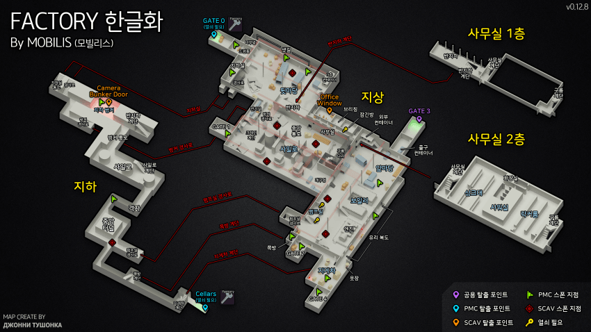

팩토리
팩토리 맵

Huntsman path - Secured perimeter(사냥꾼의 길 - 보안 경계)
퀘스트 목표
Factory(팩토리)에서 Office area에서 PMC 6명 처치하기
퀘스트 보상
- 14,000 경험치
- Jaeger(예거) 평판 +0.03
- 35,000 루블(₽)
- 2x Pliers Elite
- A set of tools
- 2x Nippers
- 2x Corrugated hose
커스텀 사무동 구역(스캐브 Office Window 탈출구)에서 PMC 6명을 잡으면 되는데, 그 곳 구역이 팩토리의 거의 유일한 파밍지역이라 사람들이 몰린다.